Versiyon: 1.0
Tarih: 2026-05-25
Hedef: Yeni tenant admin'i, hiçbir şey kurulmamış boş bir kurumdan başlayıp ay sonunda işleyen bir stratejik planlama sistemine ulaşır.
Tahmini süre: İlk kurulum 4-6 saat (ekibinizle birlikte). Sonra haftalık 1-2 saat bakım.
Bu rehberi okuyup uygulayan kişi:
- Kurum profilinden bireysel hedeflere kadar 17 adımlık tam akışı uygular
- Her ekranda hangi alanı dolduracağını, hangi butona basacağını bilir
- Sonunda kullanıcılar veri girmeye başlayabilir durumda olur
| Aşama | Adım | Yapılan İş | Süre |
|---|---|---|---|
| A. Temel | 1 | Profil + güvenlik | 5 dk |
| 2 | Kurum profili (logo, isim) | 10 dk | |
| 3 | Kurumsal kimlik (misyon/vizyon/değerler) | 30 dk | |
| B. Yapı | 4 | İlk plan yılı | 5 dk |
| 5 | Ana ve alt stratejiler | 60 dk | |
| 6 | Süreçler | 60 dk | |
| 7 | KPI tanımları | 60-120 dk | |
| C. İnsan | 8 | Kullanıcı davetleri | 20 dk |
| 9 | Süreç atamaları (lider/üye) | 15 dk | |
| 10 | Bireysel PG atamaları | 30 dk | |
| D. Operasyon | 11 | Faaliyetler | 30 dk |
| 12 | Initiative'ler (opsiyonel) | 30 dk | |
| E. Analiz | 13 | SWOT / PESTLE / OKR | 45 dk |
| 14 | Hoshin / Blue Ocean / VRIO (opsiyonel) | 60 dk | |
| 15 | Replan trigger'lar | 15 dk | |
| F. Sistem | 16 | AI yapılandırması | 10 dk |
| 17 | Bildirim & e-posta | 10 dk | |
| Final | — | İlk çeyreklik review | 30 dk |
✅ Önemli: Sıralı yapmak şart. Sırayı bozarsanız (örn: önce KPI tanımlayıp sonra süreç açmak) bazı bağlantılar elle düzeltmek zorunda kalır.
Başlamadan önce şu bilgileri el altında bulundurun:
💡 Bu bilgiler tek seferde tam olarak hazır olmak zorunda değil — yapılırken eklenebilir. Ama en azından 1. ve 2. kategori başlangıçta olmalı.
İlk giriş yaptıktan sonra kendi hesabınızı güvene alın.
Erişim: Sağ üst köşedeki avatar → "Profil"
Yapın:
- Yeni şifre: en az 6 karakter, büyük/küçük harf + rakam
- Güçlü bir parola yöneticisi kullanın (1Password, Bitwarden, KeePass)
Kaydet butonuna bas.
Erişim: Profil → "2FA'yı Etkinleştir"
Yapın:
1. Telefonunuzdaki Authenticator app'i aç (Google Authenticator, Microsoft Authenticator, Authy)
2. QR kodu tara
3. App'in gösterdiği 6 haneli kodu Kokpitim'e gir
4. Yedek kodları kaydet (Word/Notion'da güvenli yer)
✅ Bundan sonra giriş yaparken şifre + 6 haneli kod istenir.
Yapın:
- Ad, soyad
- Telefon
- Bölüm/unvan
- Profil fotoğrafı (opsiyonel ama önerilen)
Kaydet.
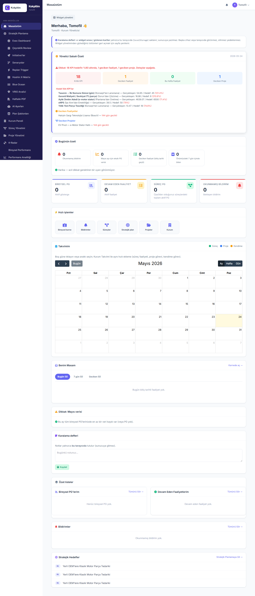
Kurumunuzun temel kimlik bilgilerini gir.
Erişim: Sol menü → Kurum Paneli → Ayarlar (/kurum/ayarlar)
| Alan | Örnek | Notlar |
|---|---|---|
| Kurum Adı | "Tomofil Otomotiv A.Ş." | Resmi isim |
| Kısa Açıklama | "EV parça üretimi" | 1-2 cümle |
| Logo | logo.png | PNG/JPG, 200x200 px ideal, max 5MB |
| İletişim E-postası | info@tomofil.com | Müşterilerin sizi bulduğu adres |
| Telefon | 0212 555 0000 | |
| Web Sitesi | https://tomofil.com | https:// dahil |
| Sektör | "Otomotiv yan sanayi" | Raporlama için |
Yapın:
1. "Logo Yükle" alanına tıkla veya sürükle-bırak
2. PNG/JPG seç
3. Önizleme görünür
4. Kaydet
⚠️ Eski logo otomatik silinir. Yeni logo sayfanın üst kısmında ve PDF raporlarında görünür.
Sol üst köşedeki sidebar'da kurum adınızı + logonuzu görmelisiniz.
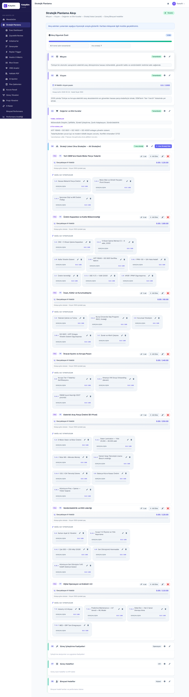
Kurumunuzun niçin var olduğu ve nereye gitmek istediğini sistemde tanımlayın.
Erişim: Sol menü → Stratejik Planlama (/sp)
Üstteki akış olgunluk göstergesi (4 adım: Misyon, Vizyon, Değerler, Stratejiler) şu an %0. Bu sayfayı 4 adım tamamladığınızda %100 olacak.
Erişim: Sol menü → SP → Misyon
Yapın:
- "Misyon nedir?" 2-3 cümlelik bir açıklama yazın
- Kurumun şu an var olma sebebini anlatır
Örnek:
"Türk otomotiv sanayisine kaliteli, sürdürülebilir ve yerli üretilmiş EV bileşenleri sunmak; müşterilerimizin global pazarda rekabet gücünü artırmak."
Kaydet.
Erişim: Sol menü → SP → Vizyon
Yapın:
- 3-5 yıl içinde olmak istediğiniz yeri yazın
- Aspirasyonel, somut, ölçülebilir
Örnek:
"2030 yılına kadar Avrupa'nın en büyük 5 EV bileşen tedarikçisi arasına girmek ve ihracat oranımızı %60'a çıkarmak."
Kaydet.
Erişim: Sol menü → SP → Değerler
Yapın:
- 5-7 temel değer madde madde
- Her birinin altında 1 cümlelik açıklama olsun
Örnek:
- Müşteri Odaklılık — Her kararımızda müşterimizin uzun vadeli başarısını gözetiriz
- Sürdürülebilirlik — Üretim ve operasyonlarımızda karbon ayak izini sürekli azaltırız
- Yenilikçilik — Ar-Ge'ye gelirin %5'ini ayırıyoruz
- Şeffaflık — Tüm paydaşlarla açık iletişim
- Liyakat — İşe alım ve terfide sadece performans
- Etik — Kısa vadeli kazanç için değerlerimizden ödün vermeyiz
Kaydet.
Daha detaylı etik metin varsa "Etik Kuralları" alanına yapıştırın. Yoksa geç.
SP ana sayfasına dön (/sp). Üstteki olgunluk göstergesi %75 olmalı (sadece "Stratejiler" eksik, sıradaki adımda yapacağız).
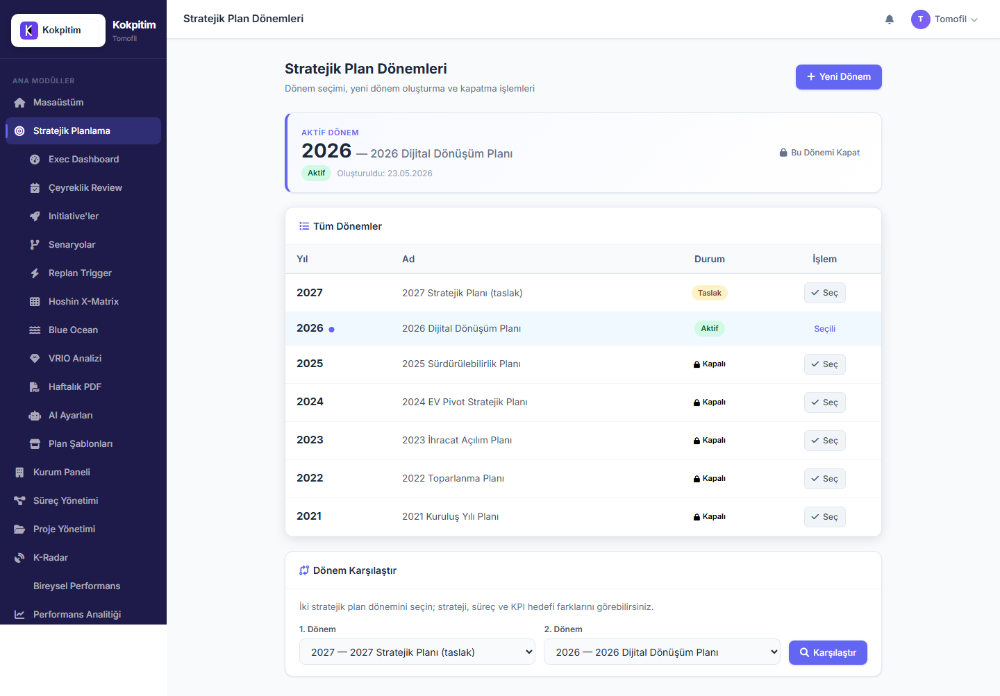
Tüm stratejik planlamanız bir plan yılına bağlı olur. Önce yıl açın.
Erişim: Sol menü → SP → Plan Yılları (/sp/donemler)
İlk girişte boş bir liste görürsünüz.
Buton: "Yeni Plan Yılı"
İki seçenek var:
A) Boş başla:
- Yıl seç: örn. 2026
- Ad: "2026 Stratejik Planı"
- "Oluştur"
B) Şablondan başla (önerilen kamu kurumları için):
- Yıl seç: 2026
- "Şablon Kullan" → seçenekler:
- SBB Kamu (Cumhurbaşkanlığı Strateji Bütçe Başkanlığı uyumlu, 5 ana strateji + 17 alt strateji + 8 KPI)
- (Gelecekte) Sektörel şablonlar (SaaS, Üretim, Sağlık)
✅ Önerim: İlk kurulumda A) Boş başla seçin. Şablon hızlı ama her zaman tam uygun olmaz. Kendi yapınızı kurarsanız özelleştirme yapmazsınız.
Buton: Yeni oluşturulan yılın yanında "Aktif Yap"
✅ Bundan sonra tüm strateji, KPI, süreç bu yıla bağlı olarak oluşturulacak.
⚠️ Aynı yıla 2 normal plan açılamaz (sadece senaryolar açılabilir).
Kurumunuzun stratejik amaçlarını sisteme girin.
Erişim: /sp
Buton: "Strateji Ekle" → modal:
| Alan | Açıklama | Örnek |
|---|---|---|
| Kod | Tanımlayıcı | AS1 |
| Başlık | Kısa açıklama | "Pazar Liderliği" |
| Tanım | 2-3 cümle | "Türkiye'nin en büyük EV parça üreticisi olmak" |
| Vizyona Katkı | 1-5 | 5 |
Önerim: 3-5 ana strateji ile başlayın. Daha fazlası odaklanmayı zorlaştırır.
Standart 4-Perspektif Yaklaşımı (BSC):
- AS1 — Finansal (büyüme, kârlılık)
- AS2 — Müşteri (memnuniyet, pazar payı)
- AS3 — İçsel Süreç (verimlilik, kalite)
- AS4 — Öğrenme & Gelişim (insan kaynağı, teknoloji)
Her ana strateji için 2-4 alt strateji ekleyin.
Buton: Ana strateji satırının yanındaki "+ Alt Strateji"
Örnek (AS1 — Pazar Liderliği için):
- AS1.1 — Mevcut müşteri portföyünü %30 büyütmek
- AS1.2 — 3 yeni AB ülkesinde distribütör ağı kurmak
- AS1.3 — Yeni nesil EV bataryası ürün hattı geliştirmek
Erişim: SP → Strateji Haritası (/sp/strateji-haritasi)
vis-network interaktif grafik açılır. Mor düğümler = ana stratejileriniz, açık mor = alt stratejileriniz. Yeşil/turuncu düğümler henüz boş (sürerçleri eklediğimizde dolacak).
Erişim: Kurum Paneli → "K-Vektor"
BSC perspektiflerinin yüzdesini ayarla:
- Finansal: %25
- Müşteri: %30
- İçsel Süreç: %25
- Öğrenme: %20
Toplam 100 olmalı. Bu ağırlıklar, vizyon skoru hesabında kullanılır.
✅ Olgunluk göstergesi şimdi %100 olmalı.
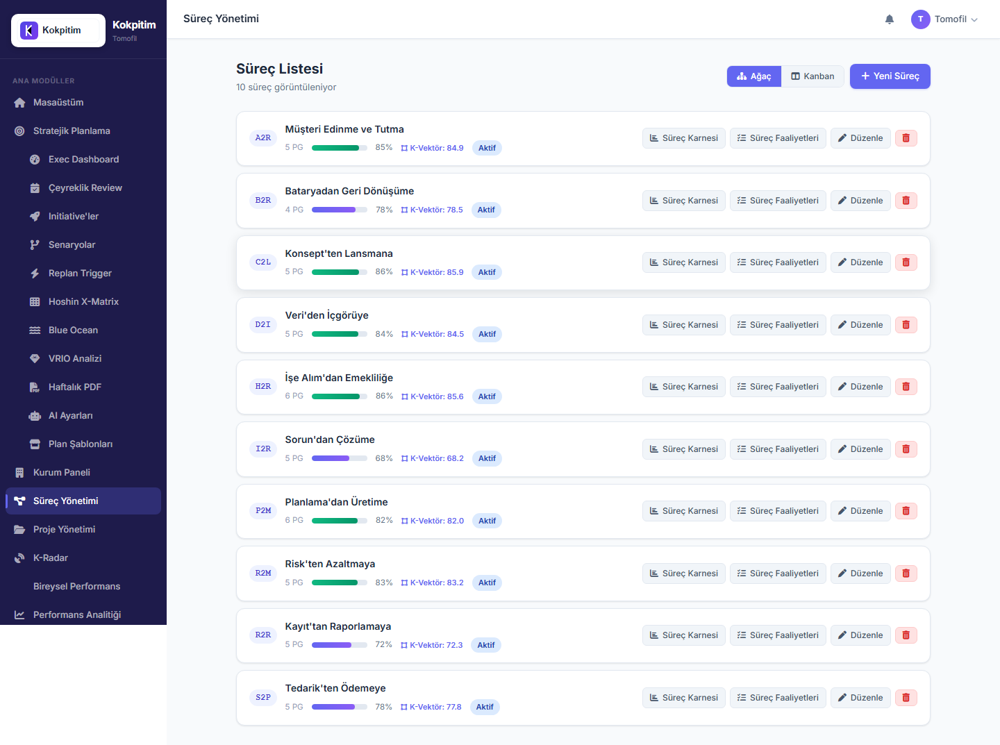
Kurumunuzun günlük operasyonel süreçlerini tanımlayın ve stratejilere bağlayın.
Erişim: Sol menü → Süreçler (/process)
İlk girişte boş bir liste.
Buton: "Yeni Süreç" → modal:
| Alan | Örnek |
|---|---|
| Kod | P2M (Procure-to-Manage) |
| Ad | "Tedarikten Üretime" |
| Açıklama | "Hammadde tedariği, üretim hattı, son ürün stok" |
| Lider | (Bir kişi seç — geçici olarak siz olabilir) |
| Üyeler | (Boş bırak, ADIM 9'da ekleyeceğiz) |
| Plan Yılı | 2026 (otomatik aktif yıl) |
| Ağırlık | 25 (toplam 100 olacak şekilde) |
Önerim — Tipik Bir Üretim Şirketi için 8-12 Süreç:
1. Stratejik Planlama
2. Pazarlama & Satış
3. Müşteri İlişkileri
4. Tedarik Zinciri
5. Üretim Planlama
6. Üretim Operasyonları
7. Kalite Yönetimi
8. AR-GE & Ürün Geliştirme
9. İnsan Kaynakları
10. Finans & Muhasebe
11. Bilgi Teknolojileri
12. İdari İşler & Tesis
Süreç detayına git → "Alt Stratejiler" sekmesi → ilgili alt stratejileri işaretle.
Her bağlantıda contribution_pct (katkı yüzdesi):
- Süreç hangi alt stratejiye %kaç katkı sağlıyor
- Örn: "Tedarik Zinciri" sürecinin "Hammadde maliyetini %15 azalt" alt stratejisine katkısı %80
Tüm süreçleri sırayla ekleyin. Her birini ilgili alt stratejilere bağlayın.
⚠️ Bir süreç hiçbir alt stratejiye bağlı değilse strateji haritasında "boşta" görünür. Süreçlerinizin tümü stratejik bir amaca hizmet etmeli — etmiyorsa, o süreç gerçekten gerekli mi sorgulayın.
Strateji haritasına geri dön (/sp/strateji-haritasi). Artık yeşil süreç düğümleri görünür, alt stratejilerle bağlanmıştır.
Her süreç için performans göstergeleri (KPI) tanımlayın. Bu en zaman alan adım — özen gösterin.
Süreç listesinde bir sürece tıkla.
Buton: "KPI Ekle" → modal:
| Alan | Açıklama | Örnek |
|---|---|---|
| Kod | KPI tanımlayıcı | K001 |
| Ad | Ne ölçülüyor | "Müşteri Memnuniyet Endeksi" |
| Birim | Ölçüm birimi | "%" / "adet" / "gün" / "TL" |
| Hedef Değer | Yıllık hedef | 80 |
| Yön | Yüksek/düşük iyi | higher (yüksek iyi) / lower (düşük iyi) |
| Dönem | Ölçüm sıklığı | Aylık / Çeyreklik / Yıllık |
| Veri Toplama Yöntemi | Nasıl ölçülecek | RG (Rapor Gözlem) / HKY (Hesaplama) / SH (Sayım) vb. |
| Ağırlık | Süreç içinde | 20 (toplam 100 olacak) |
| Önemli mi | Stratejik önem | ✓ (kritikse işaretle) |
| Başarı Aralıkları | Yeşil/sarı/kırmızı sınırlar | 80+ yeşil, 60-80 sarı, <60 kırmızı |
✅ İyi KPI:
- Tek sayı, açık (sayısal)
- Ölçülebilir (veri kaynağı belli)
- Hedefe bağlanmış (sadece "iyileştir" değil, "%80'e çıkar")
- Sorumlusu belli
- Süresi belli
❌ Kötü KPI:
- "Çalışan motivasyonu iyi olsun" — ölçülmez
- "Verimlilik" — neyin verimliliği, hangi birim?
- "Daha iyi yap" — hedef yok
Sırayla her süreç → 3-7 KPI ekle.
✅ Bittiğinde strateji haritasında turuncu KPI düğümleri görünür.
Eğer KPI'nın hedef değeri yıldan yıla değişiyorsa (örn: 2026 hedef 80, 2027 hedef 85):
Erişim: SP → Plan Yılları → 2026 → "KPI Hedef Yapılandırması"
Her KPI için bu yıla özgü hedef değer + birim override edilebilir.
Sistemde kim olacak, hangi rolde olacak — şimdi belirleyin.
Erişim: Sol menü → Admin → Yönetim Paneli (/admin/yonetim-paneli)
Buton: "Yeni Kullanıcı" → modal:
| Alan | Örnek |
|---|---|
| E-posta | ahmet.yilmaz@tomofil.com |
| Ad | Ahmet |
| Soyad | Yılmaz |
| Telefon | 0532 ... |
| Bölüm | "Üretim" |
| Rol | (aşağıdaki tabloya bak) |
| Aktif | ✓ |
| Rol | Kime | Yetki Düzeyi |
|---|---|---|
| tenant_admin | Genel müdür, CFO, CEO yardımcısı | Tam yönetim — sizin gibi |
| executive_manager | Genel müdür yardımcıları | SP modülüne tam erişim |
| kurum_yoneticisi | Departman müdürleri | Kurum ayarları + raporlama |
| surec_lideri | Süreç sahipleri (örn: Üretim Müdürü) | Atandığı süreçler için tam yetki |
| manager | Takım liderleri | Ekibinin performans raporu |
| kalite | Kalite departmanı | Süreç kalite gözden geçirme |
| kurum_kullanici | Genel çalışanlar | Kendi karnesi + atandığı KPI veri girişi |
| izleyici | Stajyerler, danışmanlar | Sadece görüntüleme |
✅ Önemli kural: En az 2 tenant_admin olmalı (siz + 1 kişi daha). Tek admin = tehlikeli (kaza, ayrılma, izin).
İki seçenek:
- Otomatik üret: Sistem geçici şifre yapar, e-posta gönderilir
- Manuel gir: Siz belirlersiniz, kullanıcıya iletilir
Kullanıcı ilk girişte değiştirmek zorundadır (önerilen).
Çalışan listenizi sırayla ekleyin. Tipik bir 100 kişilik kurum için 30-50 kişi Kokpitim'e eklenir (her çalışan değil, sadece veri girecek/karne sahibi olacak).
Kullanıcılar eklendikten sonra süreçlere atayın.
Erişim: Süreçler → bir süreç seç → "Üyeler" sekmesi
| Rol | Sayı | Görevi |
|---|---|---|
| Süreç Lideri | 1 (mutlaka) | Süreç performansından sorumlu, KPI hedefleri belirler |
| Süreç Üyesi | 2-10 | Süreç KPI verilerini girer |
| Süreç Sahibi (opsiyonel) | 1 | Üst yönetim temsilcisi, sponsor |
| Rol | Ne yapabilir |
|---|---|
| Lider | KPI ekle/güncelle/sil, hedef değiştir, üye ekle |
| Üye | Sadece KPI veri girişi |
| Sahip | Görüntüleme + üst yönetim onayı |
Süreç listesi sayfasında her sürecin yanında lider + üye sayısını görmelisiniz. Boş süreç kalmasın.
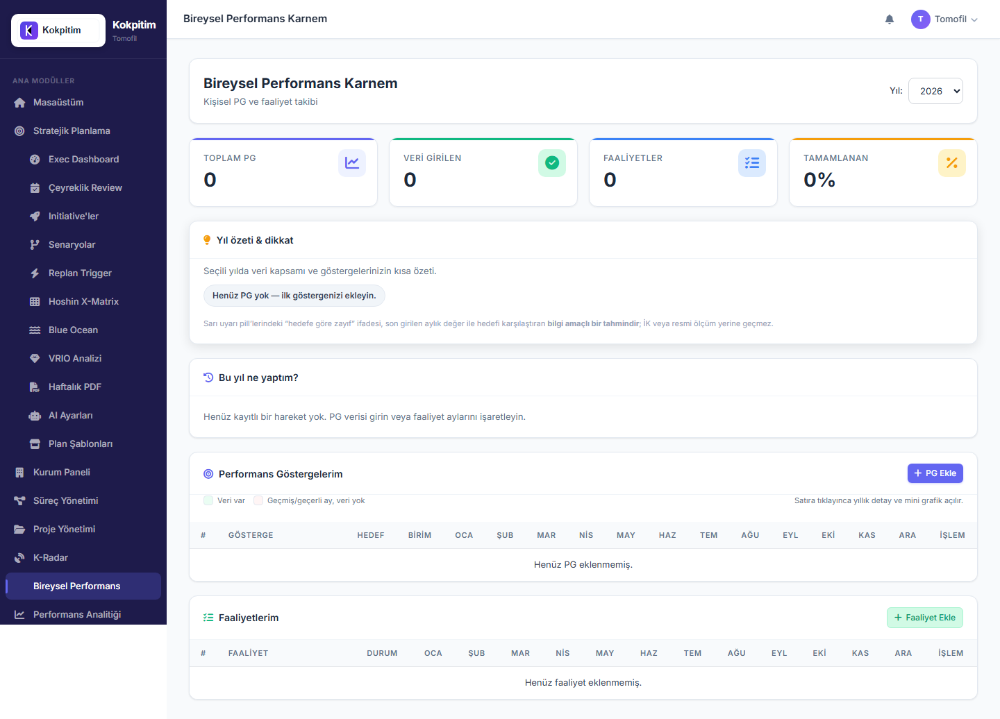
Her çalışanın kendi bireysel hedefleri olacak. Bu hedefler genelde süreç KPI'larından türetilir.
Erişim: Bireysel modülü → "Süreç KPI'sından PG Türet"
Adımlar:
1. Hangi süreç KPI'sından PG açılacak seç (örn: "Müşteri Memnuniyet Endeksi")
2. Hangi kullanıcıya atanacak seç (örn: "Pazarlama Müdürü")
3. Hedef değer (genelde süreç KPI'sı ile aynı, isteğe göre değiştir)
4. "Oluştur" → kullanıcının bireysel karnesinde PG görünür
Bazı PG'ler süreç KPI'sı değil, sadece kişiseldir (örn: "Yıllık eğitim saatim").
Erişim: Bireysel modülü → "PG Ekle"
Çalışan başına 3-7 bireysel PG önerilir. Daha azı motivasyon eksikliği, daha çoğu dağılma getirir.
PG'leri atadıktan sonra her çalışana e-posta ile haber verin: "Kokpitim'de size atanmış X hedef var, lütfen bireysel karnenize bakın."
KPI'lar sonuçları ölçer, faaliyetler yapılacak işleri ifade eder. Her süreç için 5-10 faaliyet ekleyin.
Erişim: Süreç detayı → "Faaliyetler" sekmesi → "Yeni Faaliyet"
| Alan | Örnek |
|---|---|
| Ad | "Aylık satış toplantısı" |
| Açıklama | "Tüm satış ekibinin katılımıyla aylık performans değerlendirme" |
| Durum | Planlandı |
| Sorumlu | Satış Müdürü |
| Başlangıç | 2026-01-15 |
| Bitiş | 2026-12-15 |
| Tekrar | Aylık (her ayın 15'i) |
| Önem | Yüksek |
Sürekli yapılan işler için tekrar (recurrence) tanımla:
- Günlük (örn: sabah huddle)
- Haftalık (örn: ekip toplantısı)
- Aylık (örn: rapor hazırlama)
- Çeyreklik (örn: review)
Sistem her dönemde otomatik yeni faaliyet kaydı açar.
Bireysel karne içinde de faaliyetler vardır. ADIM 10'da PG atadığınız her kişi için 2-3 bireysel faaliyet ekleyin (örn: "Her ay 1 müşteri ziyareti").
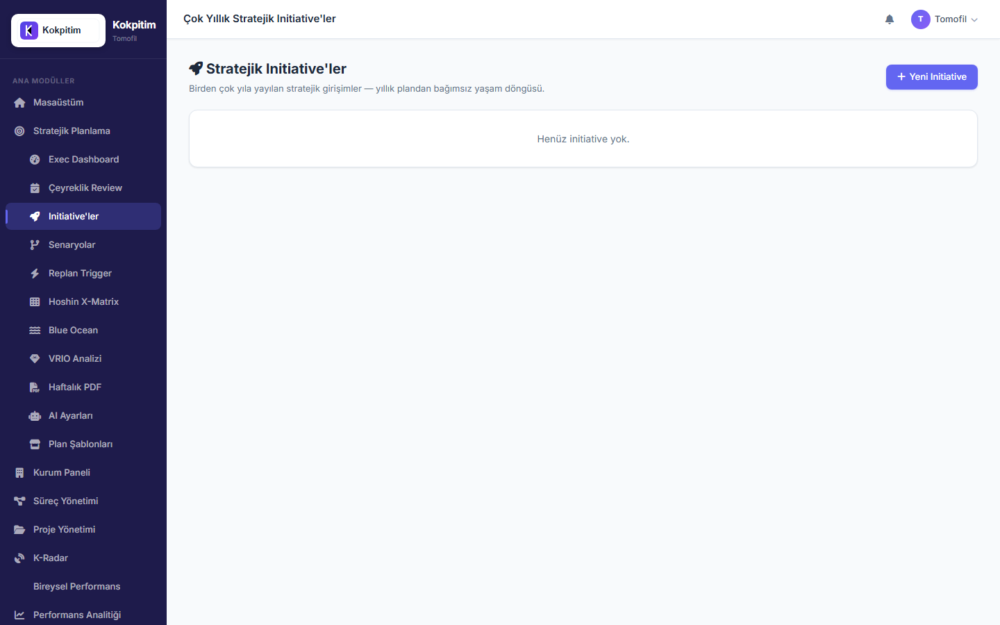
Initiative = bir veya daha çok yıllık stratejik girişim. Strateji ve günlük operasyondan farklı, belirli bir değişim için açılan proje.
Erişim: SP → Initiative'ler (/sp/initiatives) → "Yeni Initiative"
| Alan | Örnek |
|---|---|
| Ad | "EV Bataryası ARGE Programı" |
| Kod | INIT-2026-01 |
| Açıklama | "3 yıllık ARGE programı..." |
| Bağlı Strateji | AS1 |
| Bağlı Alt Strateji | AS1.3 |
| Başlangıç Yılı | 2026 |
| Bitiş Yılı | 2028 |
| Durum | Planlandı |
| Öncelik | Yüksek |
| Toplam Bütçe | 5.000.000 TL |
| Sahibi | (Bir kullanıcı) |
Initiative detayında "Milestone Ekle":
- M1 — Konsept tasarımı (2026 Q2)
- M2 — Prototip (2026 Q4)
- M3 — Pilot üretim (2027 Q2)
- M4 — Seri üretim (2028 Q1)
Initiative tanımladıktan sonra strateji haritasında pembe düğümler olarak görünür, ana stratejiye bağlıdır.
Akademik analiz çerçevelerini doldurun. Bunlar dönem başı toplantısında üst yönetimle birlikte yapılır.
Erişim: SP → "SWOT" sekmesi veya /sp/api/swot
4 alan doldur:
- Strengths (Güçlü yönler) — örn: "Güçlü ARGE ekibi", "Geniş müşteri portföyü"
- Weaknesses (Zayıf yönler) — örn: "Yüksek personel devir hızı"
- Opportunities (Fırsatlar) — örn: "EV pazarındaki büyüme"
- Threats (Tehditler) — örn: "Çin üreticilerinin agresif fiyatlandırması"
Erişim: SP → "PESTLE"
6 alan:
- Political — yasal/politik
- Economic — makroekonomi
- Social — sosyal/demografik
- Technological — teknoloji
- Legal — düzenleyici
- Environmental — çevre
Erişim: SP → OKR (/sp/okr) → "Yeni Objective"
| Alan | Örnek |
|---|---|
| Başlık | "EV pazarında lider olalım" |
| Sahip | Pazarlama Müdürü |
| Hedef Tarih | 2026 Q4 |
Her objective için 2-5 Key Result:
- KR1: "Pazar payımızı %15'ten %22'ye çıkar"
- KR2: "3 yeni stratejik müşteri kazan"
- KR3: "Marka bilinirlik anketinde %50+ rakam"
Her KR bir süreç KPI'sına bağlanabilir → otomatik veri ile beslenir.
SWOT'tan strateji türetme matrisi:
- SO (Güç + Fırsat) → Saldırı stratejisi
- WO (Zayıf + Fırsat) → İyileştirme
- ST (Güç + Tehdit) → Savunma
- WT (Zayıf + Tehdit) → Sakınma
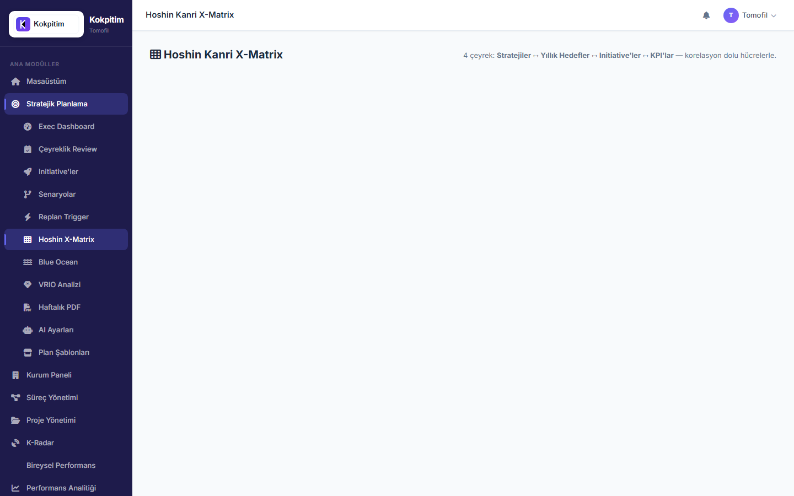
İleri düzey akademik çerçeveler. İlk kurulumda atlayabilirsiniz, 2-3 ay sonra eklersiniz.
Erişim: SP → Hoshin X-Matrix (/sp/xmatrix)
Otomatik üretilir — kullandığınız stratejiler/initiative'lar/KPI'lar arasındaki korelasyon matrisi gösterilir. Veri girmenize gerek yok, sistem otomatik çıkarır.
Üst yönetim toplantısında "hangi strateji hangi KPI ile ölçülüyor?" sorusunu görsel yanıtlar.
Erişim: SP → Blue Ocean → "Yeni Canvas"
| Alan | Örnek |
|---|---|
| Ad | "EV Pazar Stratejisi 2026" |
| Sektör | "EV bileşen üretimi" |
| Rakipler | "ChinaEV, GermanAuto, KoreanTech" |
Faktör Ekle (sektörünüzdeki rekabet faktörleri):
- Fiyat: kendi 6, rakip 4
- Kalite: kendi 8, rakip 9
- Hız: kendi 7, rakip 6
- Dijital Entegrasyon: kendi 5, rakip 8
Chart.js otomatik Value Curve çizer.
ERRC Grid:
- ❌ Eliminate — "Geleneksel pazarlama bütçesi"
- ⬇️ Reduce — "Fizik satış ekibi"
- ⬆️ Raise — "Online destek"
- ⭐ Create — "Self-service portal"
Erişim: SP → VRIO → "Yeni Kaynak"
Her kurumsal kaynak/yetenek için 4 işaret:
- Valuable — Değerli mi?
- Rare — Nadir mi?
- Inimitable — Taklit zor mu?
- Organized — Kurumsallaşmış mı?
Sistem otomatik Barney karar ağacına göre etiket basar:
- V yoksa → "Rekabetçi Dezavantaj"
- V+R+I+O hepsi → "Sürdürülebilir Rekabet Avantajı" ⭐
Örnek girişler:
- "ARGE patentlerimiz" → V+R+I+O = sürdürülebilir avantaj
- "Genel ofis binası" → V ama R değil = parite
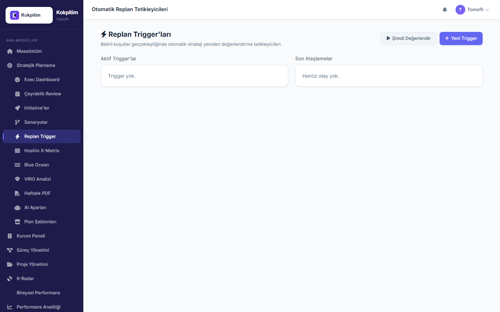
Otomatik strateji yeniden değerlendirme kuralları.
Erişim: SP → Replan Trigger (/sp/replan-triggers) → "Yeni Trigger"
Tipik Tetikleyiciler:
| Tip | Örnek | Aksiyon |
|---|---|---|
kpi_below_target |
"Müşteri memnuniyeti 2 ay üst üste hedef altında" | suggest_pivot |
overdue_activity_pct |
"Faaliyetlerin %30'u gecikti" | create_review |
risk_score |
"Risk skoru threshold geçti" | notify |
anomaly_high |
"Yüksek-severity anomali tespit" | notify |
| Alan | Değer |
|---|---|
| Ad | "Müşteri memnuniyeti düşüyor uyarısı" |
| Tip | kpi_below_target |
| Target KPI | (Müşteri Memnuniyet Endeksi KPI'sı seç) |
| Operatör | < |
| Eşik | 70 |
| Ardışık Dönem | 2 (üst üste 2 ay) |
| Aksiyon | suggest_pivot |
| Önem | Yüksek |
Trigger'ları test etmek için bu butonu kullan. Tüm aktif trigger'lar koşulları kontrol eder, tetiklenenler için event açar.
İlk başlarken 3-5 trigger yeter. Sonra ihtiyaç doğdukça eklersiniz.
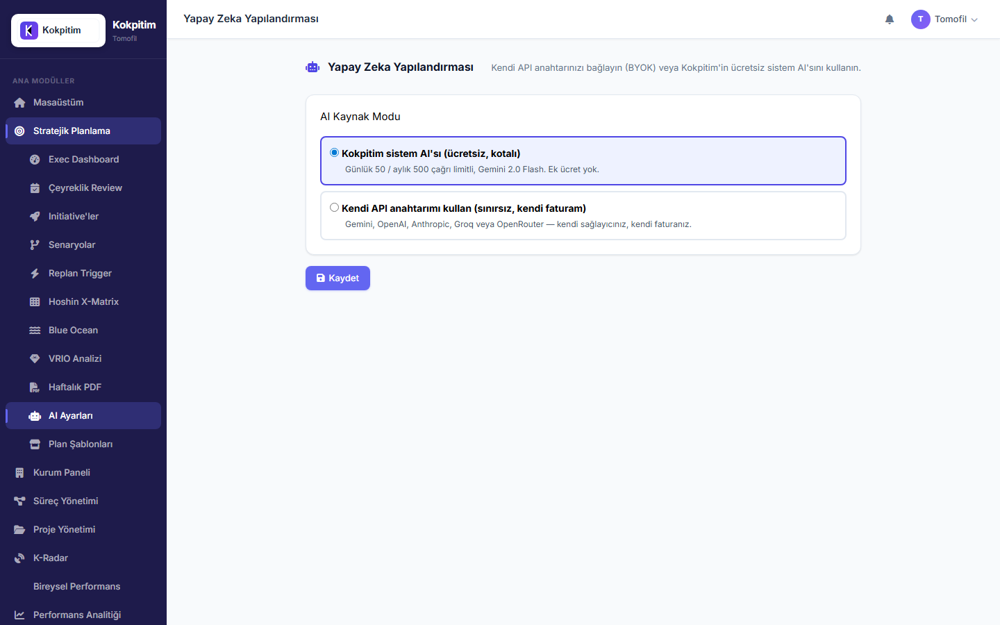
AI tabanlı öneri sistemini etkinleştirin.
Erişim: SP → AI Ayarları (/sp/ayarlar/ai)
Mod 1: Kokpitim Sistem AI'sı (Önerilen, başlangıç)
- Ücretsiz
- Günlük 50 / aylık 500 çağrı
- Gemini 2.5 Flash Lite varsayılan
- Kotaları aşılırsa kural motoruna düşer (asla çökmez)
Mod 2: Kendi API Anahtarımı Kullan (BYOK)
- Sağlayıcı seçin: Google Gemini / OpenAI / Anthropic / Groq / OpenRouter
- API Key girin (Fernet ile şifreli saklanır)
- "Anahtarı Test Et" butonu ile doğrulayın
- Avantaj: sistem kotanız harcanmaz, sınırsız kullanım
✅ İlk kurulumda Mod 1 seçin. Tenant büyüdükçe Mod 2'ye geçebilirsiniz.
İşaretleyin (önerilen). TC kimlik, IBAN gibi hassas verilerin AI prompt'larına gönderilmesini engeller.
Erişim: SP → LLM Kullanım (/sp/llm-usage)
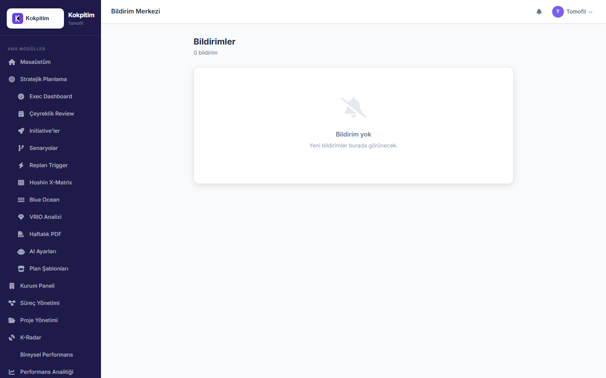
Sistem kullanıcılara mail gönderebilmesi için SMTP'yi yapılandırın.
Erişim: Sol menü → Ayarlar → E-posta (/ayarlar/eposta)
Doldurulacak:
| Alan | Örnek |
|---|---|
| SMTP Sunucusu | smtp.gmail.com / smtp.office365.com |
| Port | 587 (TLS) veya 465 (SSL) |
| Kullanıcı Adı | bildirim@tomofil.com |
| Şifre | (uygulama şifresi — Gmail için 2FA gerek) |
| Gönderici Adresi | "Kokpitim - Tomofil" \<bildirim@tomofil.com> |
| TLS/SSL | TLS (önerilen) |
Buton: "Test E-posta Gönder" — kendinize test maili gönderir.
✅ Mail geldiyse SMTP doğru. Gelmiyorsa: spam klasörünüze bakın, ayar kontrolü.
Sistem şu durumlarda otomatik e-posta gönderir:
- Yeni süreç ataması
- Yeni KPI eklemesi
- Faaliyet bitiş tarihi yaklaşıyor (3 gün kala)
- Yöneticiden yorum geldi
- Replan trigger ateşlendi
Kullanıcı kendi profil ayarlarından bu mailleri kapatabilir.
Slack/Teams/Discord entegrasyonu için:
- Erişim: K-Rapor → "Webhook Yönetimi"
- URL'i Slack webhook'unuzdan al
- Bağla → anomali tespit edildiğinde otomatik mesaj gider
Kurulum bittikten sonra şu kontrolleri yapın:
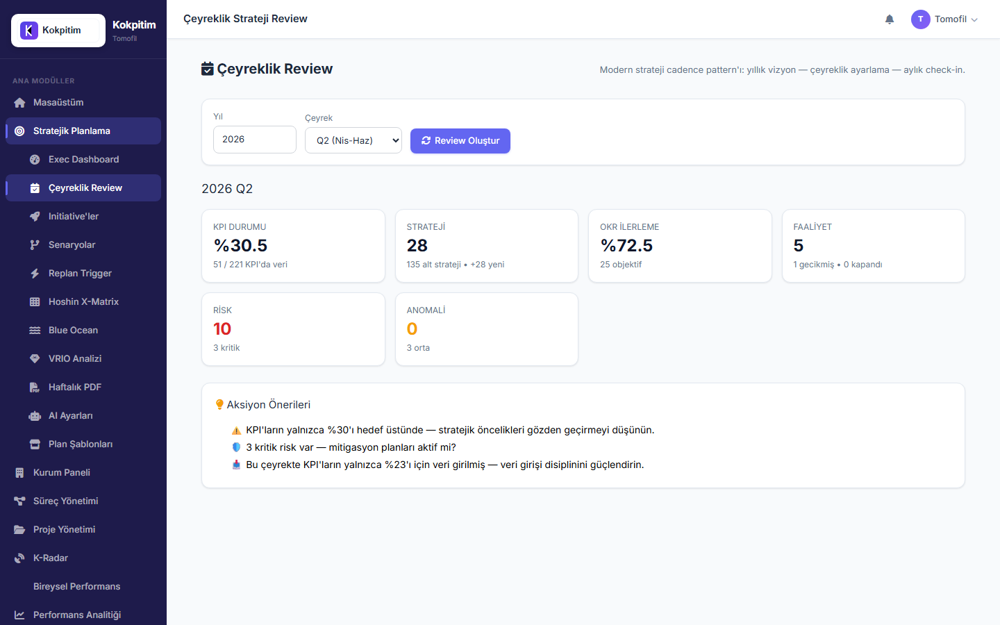
Kurulum bittikten 1 hafta sonra ilk çeyreklik review yapın.
Erişim: SP → Çeyreklik Review (/sp/ceyreklik-review)
Sistem önerileri
Üst yönetim toplantısında bu raporu paylaşın.
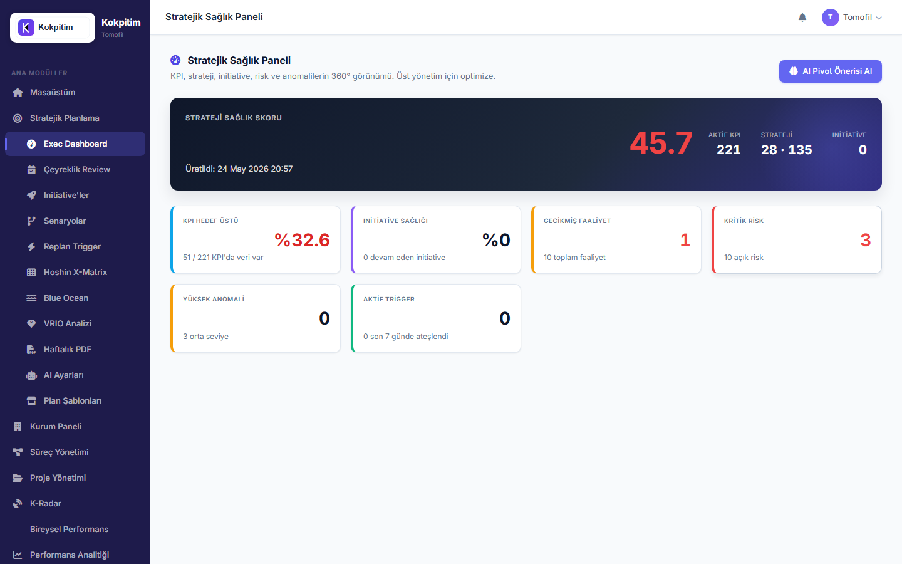
Erişim: SP → Exec Dashboard (/sp/exec-dashboard)
İlk başta tüm rakamlar düşük olacak çünkü veri yeni girilmeye başlandı. 1 ay sonra anlamlı rakamlar görmeye başlarsınız.
"AI Pivot Önerisi" butonuna basın — Gemini'den (veya kural motorundan) 3-5 strateji önerisi gelir.
Tenant kurulduktan sonra haftalık + aylık bakım önerilir.
/sp/ceyreklik-review)/sp/scenarios)/sp/donemler)Sebep: Aynı yıla zaten plan var.
Çözüm: Var olan planı kullan veya senaryo olarak dallandır.
Çözüm: ADIM 4'ü atlamışsın. Önce plan yılı aç.
Sebep: Plan yılı kapatılmış (status=closed).
Çözüm: SP → Plan Yılları → ilgili yılı tekrar "Aktif Yap".
Sebep: KPI pasif (is_active=False).
Çözüm: Süreç detayı → KPI listesi → durumu "Aktif" yap.
Sebep: SMTP yapılandırılmamış.
Çözüm: ADIM 17'yi yap, "Test E-posta Gönder" ile doğrula.
Sebep: Mod 1 sistem AI key'i yok veya kota dolu.
Çözüm: /sp/ayarlar/ai → mod kontrol et. /sp/llm-usage → kotayı gör.
Sebep: Henüz strateji/süreç eklenmemiş.
Çözüm: ADIM 5, 6, 7'yi sırayla yap.
Sebep: Ona PG ataması yapılmamış.
Çözüm: ADIM 10'u yap (Bireysel PG Atamaları).
Sebep: Dosya çok büyük veya yanlış format.
Çözüm: PNG/JPG, max 5MB. Tinify ile küçült.
Sebep: Henüz koşul tetiklenmedi (KPI verisi yeni, ardışık dönem dolmadı).
Çözüm: Veri girişleri biriktikten sonra (1-2 ay) tekrar dene.
| Hafta | Yapılacak |
|---|---|
| Hafta 1 | ADIM 1-7 (yapısal) — siz tek başınıza |
| Hafta 2 | ADIM 8-10 (kullanıcılar) — İK ile birlikte |
| Hafta 3 | ADIM 11-12 (operasyon) — süreç liderleriyle |
| Hafta 4 | ADIM 13-17 (analiz + sistem) — üst yönetim toplantısı |
| Ay 2 | Veri girişleri başlar, ilk raporlar |
| Ay 3 | İlk çeyreklik review + sistem optimizasyonu |
✅ 3 ay sonra: Sistem stabil, kullanıcılar alışmış, ilk anlamlı raporlar oluşmuş durumda.
docs/test/kokpitimtanitim.md — Sistemin genel tanıtımıdocs/test/tenant_admin_kullanim_kilavuzu.md — Referans kitap (her ekran detaylı)docs/test/tenant_kullanici_kilavuzu.md — Çalışanlar için (onlara dağıt)docs/AI-POLITIKASI.md — AI sistem kurallarıdocs/UI-KILAVUZU.md — Tasarım sistemiSorun çıktığında sırası:
docs/test/tenant_admin_kullanim_kilavuzu.md → detaylı referansBaşarılar! 🚀 Kurulum bittiğinde siz tenant'ınızı dünya standartlarında bir kurumsal performans işletim sistemi olarak çalıştırıyor olacaksınız.